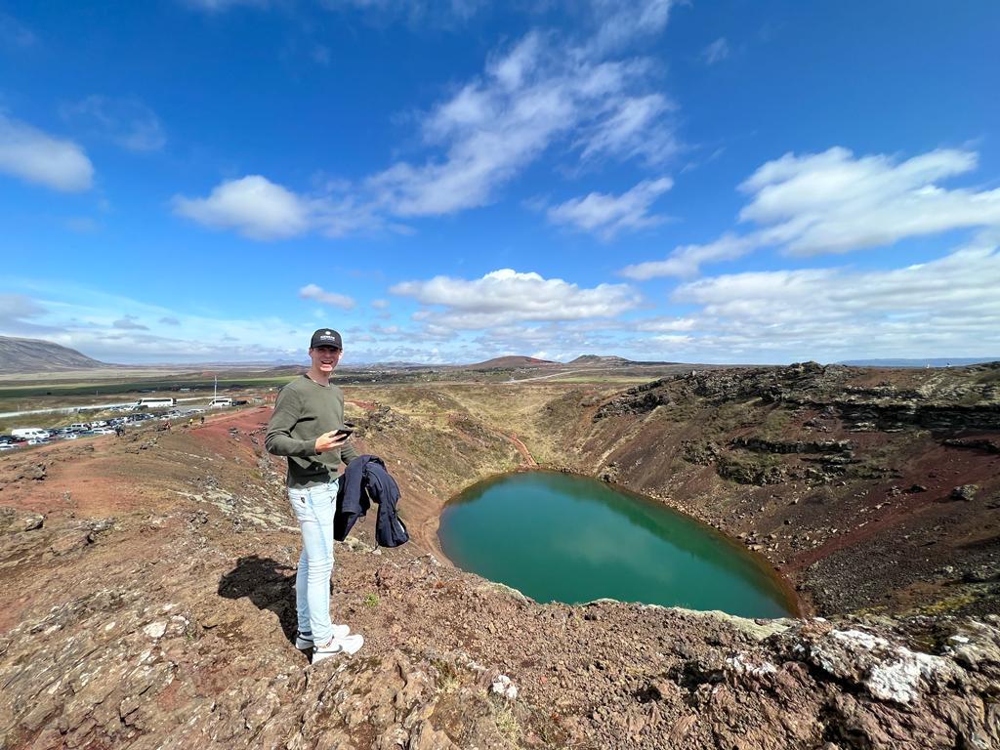
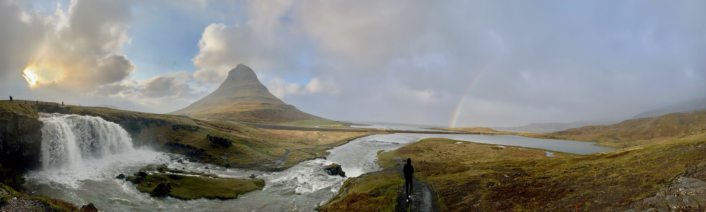

Why I chose HBO-ICT

"Motivation is the powerful force that drives us forward, even in the face of challenges. In my
journey
through the
ICT program and programming, I've discovered a profound wellspring of motivation.
When I started, I had a vague idea of what to expect. However, as I delved deeper into the
curriculum, I
found it
not only informative but enjoyable.
Before this program, I underestimated the joy it would bring. My initial perception of ICT was
limited.
But my prior
exposure to Python, HTML, and CSS had already sparked my fascination.
here I will also show you my phyton game in code:
My phyton game
As I navigate this program, my hopes remain high. I anticipate gaining knowledge and skills that
will
prepare me for
the future.
I also plan to take formal courses and certifications to augment my knowledge. These provide a
structured approach
to my education.
In conclusion, my motivation for ICT and programming embodies a passion for technology, a desire to
unlock code's
mysteries, and a commitment to growth. With clear goals and a supportive community, I am determined to
excel
in this
journey.
Of course only learing about programming is not the only reason I chose ICT.
I really like exploring other cultures and I thought it would be fun to do That
in a international course.
And because HBO-ICT also had a international course it pulled the lever for me.
I love talking English with other people,
because it helps my grammer and it is an alround language.
I love travelling so that helped me to practise my
English and understand more cultures.
Here are some places I been to:
- Iceland
- England
- Spain
- France
- Denmark
- Sweden
- Norway

I think the international course suits me the best, because of many things.
I really like travelling and finding out about other cultures.
Because you are in a mulitcultural class you get to learn everyones normal habits.
This is one thing that is a part of travelling also, that is what i think a positive part.
Here is a picture that shows one of my best pictures that I have taken:
Here is also a Map that shows were we can take our
interships.